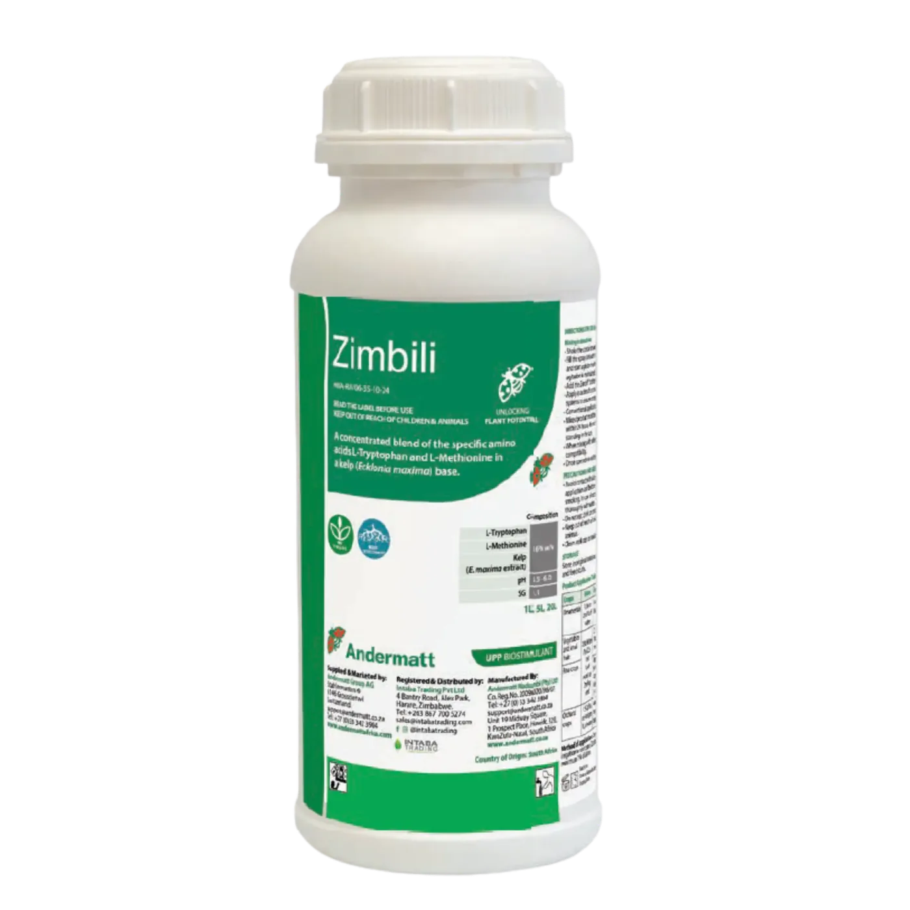

Estrés Radicular
El Problema Suelos compactados y sequías limitan el desarrollo temprano.
Soja
Zimbili combina la potencia de precursores hormonales y extractos marinos para revolucionar el sistema radicular y maximizar la absorción de nutrientes.

El Problema Suelos compactados y sequías limitan el desarrollo temprano.
La Solución Bioestimulación dirigida para reactivar el crecimiento.
El Resultado Raíces densas, mayor absorción y cultivos vigorosos.
Ciencia al Servicio del Agro
Zimbili no es magia, es fisiología vegetal avanzada. Una formulación única que integra tres motores de crecimiento.
El precursor directo de la Auxina (IAA). Actúa como una llave maestra que ordena a la planta generar nuevas raíces laterales y pelos absorbentes. Apoya la respuesta al estrés abiótico.
Regulador del etileno. En dosis precisas, estimula el crecimiento de pelos radiculares , promueve la germinación y activa las defensas naturales ante el estrés.
Extracto de alga premium ( Ecklonia maxima pura). Rico en auxinas naturales y compuestos bioactivos que promueven la división celular y el alivio del estrés.
Zimbili crea el hábitat ideal (rizosfera activa) para que los microorganismos benéficos prosperen. Al aumentar la exudación radicular, alimenta y multiplica la vida del suelo.
Maximiza la colonización de cepas como Bacillus velezensis (Amyprotec 42), creando una barrera biológica impenetrable alrededor de la raíz.
En leguminosas, Zimbili promueve una infección más rápida y efectiva por rizobios, incrementando significativamente el número y peso de los nódulos.
Ensayos realizados en Sudáfrica (2023-2024).
Incremento de rendimiento en sinergia con Amyprotec 42 . Fuente: Ensayo Trigo 2024.
Mayor peso seco de raíz (19.04g vs 15.80g). Tallos más gruesos y vigorosos. Fuente: Ensayo Maíz 2024.
Rendimiento superior (2.41 t/ha vs 2.03 t/ha) y mayor nodulación. Fuente: Ensayo Soja 2024.
Resultados visibles desde la implantación hasta la cosecha.
Incrementa dramáticamente el volumen radicular y la exploración del perfil del suelo.
Blindaje fisiológico contra sequías temporales y estrés por trasplante.
Fórmula líquida estable que no requiere cadena de frío. Logística simplificada.
Retorno de inversión superior gracias a mayores rendimientos finales.
Especificaciones de Uso y Composición
Nuestro equipo técnico-comercial te asesora sin cargo para integrarlo a tu programa de manejo.
También te puede interesar
Aporte de silicio biodisponible para fortalecer la planta y mejorar su respuesta frente al estrés.
Ver ficha técnica →Solubilizador biológico de fósforo con Bacillus velezensis FZB45 para potenciar rendimiento y calidad.
Ver ficha técnica →Suspensión concentrada que fusiona silicio, calcio y bioestimulantes para blindar el cultivo desde la semilla.
Ver ficha técnica →